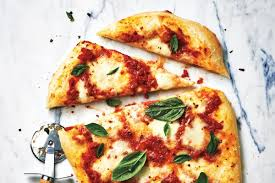

Coarse salt and freshly cracked black pepper, to taste
Pinch red chile flakes, (optional)
Olive oil, for drizzling on the pizza
*For your grocery list please click on each ingredient to keep track of what has been purchased.

Directions
Dough:
In a small bowl, add 1/3 cup lukewarm water and 1 tsp. sugar. Add yeast and let sit until foamy, about 5 to 10 minutes.
Combine 3 ¾ all-purpose flour and salt in the bowl of a stand mixer. In a stand mixer fitted with a dough blade, add water, olive and yeast mixture and blend. Knead on low speed for about 10 to 12 minutes until the dough comes together and is smooth. Remove dough from the bowl. Turn dough onto a well-floured surface and continue knead by hand until smooth and elastic, about 2 to 5 minutes. The dough should be soft but not sticky. If dough is still too sticky, add a little more flour. Place the dough in a lightly oiled medium bowl and cover. Let rest in a warm spot until doubled, about 45 to 60 minutes.
Sauce:
Drain the tomatoes in a strainer to remove excess liquid. Process the tomatoes in a food mill over a medium bowl. Discard excess liquid or keep to make a soup.
Heat olive oil in a medium saucepan on medium-low heat. Add the garlic and sauté 2 minutes or until softened. Add tomatoes and simmer for 10 minutes. Season the sauce with salt and pepper. Set sauce aside. Let cool to room temperature.
Toppings:
Preheat oven to 500 degrees F.
Place a pizza stone on the bottom rack of oven when oven begins to preheat. Heat according to manufacturer’s directions.
Punch down dough. Divide dough into 4 balls. Using your hands, stretch and pull (or alternatively roll with a rolling pin) each ball of dough into 10 to 12-inch rounds depending on how thin you want your
Sprinkle some flour onto a pizza paddle (if you don’t have a paddle, you can sprinkle flour on pizza pans or baking sheets). Place a round of dough onto the pizza paddle or pan. Evenly spoon over tomato sauce and basil and cheese. Season the pizzas with salt and pepper and chile flakes, if desired. Drizzle with olive oil. Transfer the pizza to the preheated pizza stone. Bake until topping is bubbly and crust is golden brown, about 8 to 10 minutes. Repeat with remaining rounds of dough.